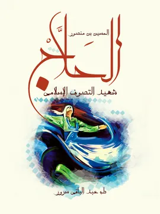

الحسين بن منصور الحلاج: شهيد التصوف الإسلامي (٢٤٤–٣٠٩ﻫ)

قراءة عربية أصلية محددة النطاق في الصفحات 9 إلى 14 من ملف PDF المرتبط، وليست تلخيصا كاملا للكتاب. نناقش ما تدعمه هذه المقاطع فقط.
سرور بين يدي الحلاج: سحر الكلمات وسحر الحياة
يقف المؤلف بين يدي كتابه شاهدًا على رحلته معه: لم يجد متاعًا للقلب وأنسًا للنفس وزادًا للتفكير كما وجد في هذه الدراسة؛ فللحلاج سحر في كلماته وسحر في حياته، إنه من الشخصيات التي تملك قوة الإيحاء وقدرة الاستهواء، ولهذا فسواء كنت معه أو كنت عليه، فلا تملك نفسك من أن تحبه وتهواه. ويؤكد أنه حاول جاهدًا ألا تتأثر الدراسة بهذا السحر، وأن تنطلق إلى هدفها مجردة من كل عاطفة إلا عاطفة البحث عن الحقيقة، الحقيقة المجردة لذاتها. ويعلن الريادة: هذا هو الكتاب الأول الذي يصدر عن الحلاج في لغة الضاد، يقدم فيه للعالم الإسلامي صورة حية من صور الحياة الروحية في أزهى عصورها، ويصور فيه حياة رجل من أئمة هذه الحياة، بل لعله نسيج وحده في هذه الحياة الغنية برجالها وأقطابها؛ فإن أوفى الكتاب بعهده فقد قدم الوجه الصحيح للرجل الذي تساءل الناس عن نبئه واختلفوا في أمره، وإن عجز فحسبه أنه محاولة أخلصت وجهها لله. ثم يفتتح فصل «شعاع على التاريخ» بسؤال فريد الدين العطار عن حماسة هذا العاشق الجسور.
زاوية وحدود القراءة
قراءة موجزة من ص ٩ إلى ص ١٤ من أصل ١٧٨ صفحة، تعرض مطلع الدراسة، لا الدراسة كاملة.
الطبعة والقراءة
هذه النسخة من الكتاب صادرة ومتاحة مجانًا من مؤسسة هنداوي بشكل قانوني؛ حيث إن نص الكتاب يقع في نطاق الملكية العامة تبعًا لقوانين الملكية الفكرية.
تنزيل PDF المجاني ↓ القراءة والمصدر الرسمي ↗